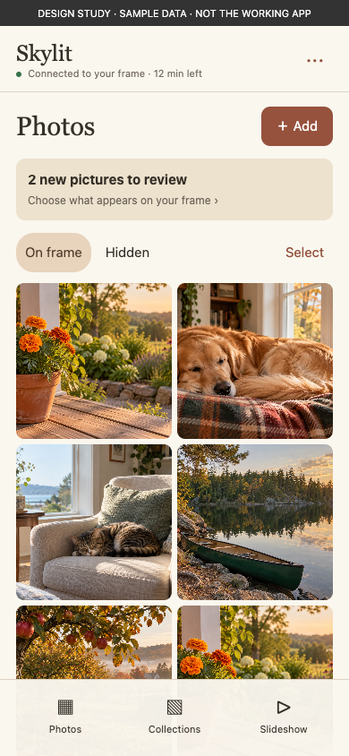
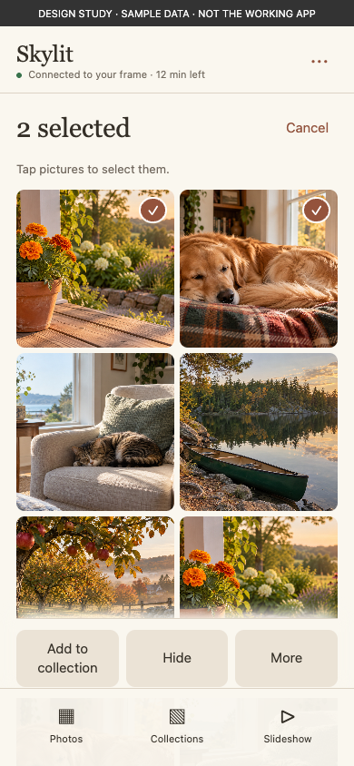
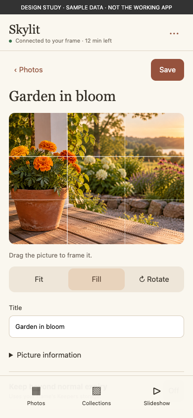
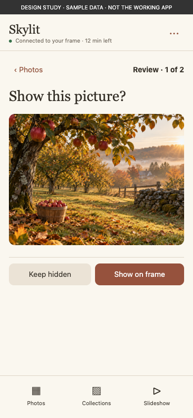
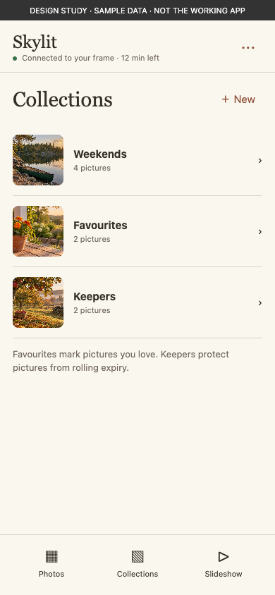
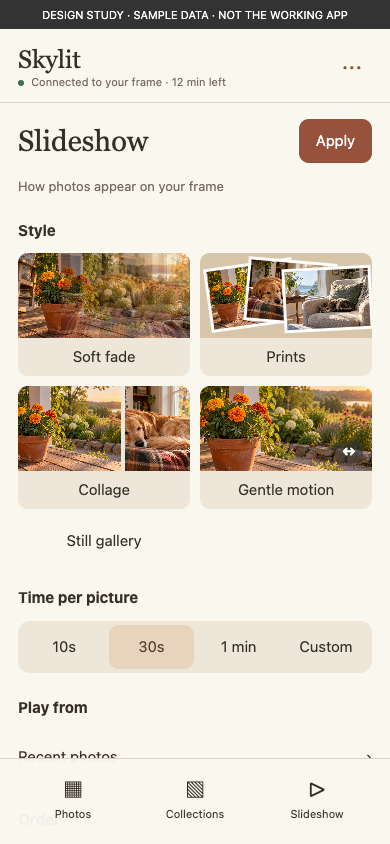
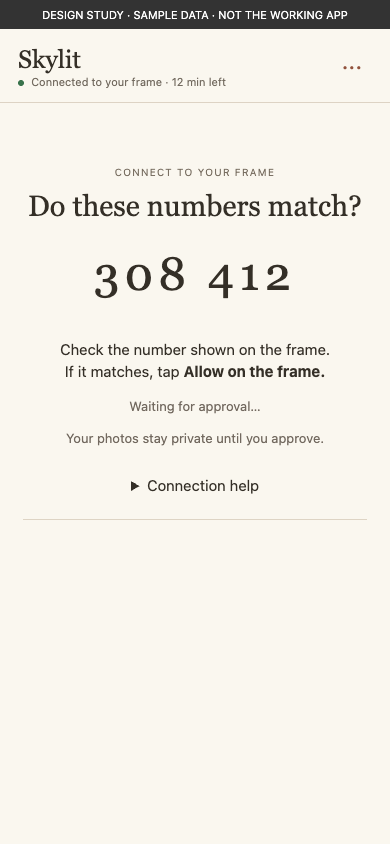
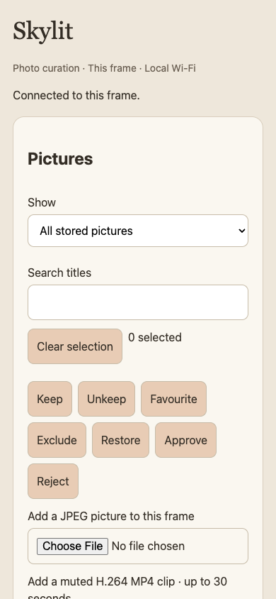

Skylit — phone interface design reviewSkylit · Phone interface · Design review · October 13, 2026
A photo companion, currently presented as a long form.
The underlying capabilities are useful. The main design failure is that the page exposes controls before establishing what the person is doing: browsing, choosing, editing, adding or changing playback.
This is a critique and design study, not an implementation. Current screenshots come from the actual React phone page with synthetic local API responses. Proposed screens are illustrative HTML sketches. No household photos, real connection tokens or accounts were used. Android networking, browser certificate warnings and physical-phone behaviour were not tested here.
Explore the proposed phone flow525pxBefore the first photo at 390×844
3,172pxInitial page with only eight photos
1,631pxBulk actions start below the library
Measured in the synthetic eight-picture state. More photos make the separation between pictures and actions worse.
The changes that matter most
Preserve
- Warm cream/terracotta palette and an approachable serif identity.
- Matching-number approval on the physical frame before sharing photos.
- Direct, temporary local access; no separate household account on the phone.
- Real photo thumbnails, curation, collections and slideshow controls.
- Existing draft and session-expiry protections.
Change first
- Make the library the first screen; move uploads and playback out of its long form.
- Make selection an explicit mode with actions beside the current task.
- Show the image while editing it. Replace blind crop sliders with direct manipulation.
- Put success, failure and confirmation at the action, not at the top of the document.
- Correct connection copy and make the remaining session visible.
The phone should feel like a small, purpose-built companion. It does not need all frame settings, a dashboard editor or extra account machinery.
1. Let pictures establish the hierarchy
Current: Skylit, a subtitle, connection text, a section card, Pictures, Show, a dropdown, Search titles, a search field, Clear selection and “0 selected” all precede the first photo. Most of the opening viewport is controls. At 320px wide the thumbnail grid collapses to one column after this same preamble.
Proposed: a compact connection header; Photos with one primary Add action; a review banner only when needed; a short view selector and Select action; then a dense, quiet photo grid. Search is available on demand. The normal view should be clear about what can appear on the frame; Hidden and Waiting for review are deliberate destinations, rather than mixed into an undifferentiated “All stored pictures.”
Keep images dominant. Do not put a permanent checkbox, a status paragraph and an Edit button on every thumbnail. Tapping the image opens it; selection marks appear only in selection mode.
 Current app · synthetic data
Current app · synthetic data
Proposed design study · not implemented2. Selection should change the interface
Current: seven bulk buttons appear after all photos, even with zero selected. Keep/Unkeep, Exclude/Restore and Approve/Reject appear together. They look equally important, and some do not make sense in the current view. Exclude and Restore both use a second-tap confirmation, with the explanatory message placed at the page top.
Proposed: Select enters a clear mode: selection count and Cancel at the top, check overlays on pictures, and a persistent bottom action bar. Offer only applicable actions: Add to collection and Hide for normal photos; Restore for Hidden; Show on frame and Keep hidden during arrival review. Put less common actions in More. A confirmation should state the count, consequence and recovery path where the user is looking.
Keepers and Favourites are different concepts. Keepers protect against rolling expiry within a bounded storage budget; Favourites mark preference. Explain that distinction in picture details or a secondary action sheet, without making both compete in the main toolbar.
 Current app · synthetic data
Current app · synthetic data
Proposed design study · not implemented3. The picture editor needs the picture
Current: Edit scrolls to a form inserted below the entire gallery. The picture is not shown. Framing and rotation are dropdowns; horizontal and vertical crop positions are independent sliders. The user cannot judge the result. There is no clear Back/Cancel exit from this editing context.
Proposed: a dedicated picture screen with a large image, a visible crop boundary, drag-to-position and a Rotate action. Fit/Fill/Follow slideshow are understandable choices next to the preview. A title is secondary, with accessibility description and capture date under Picture information. Keep a visible Save and clear cancel/back behaviour for this multi-field edit, including unsaved-change protection.
The proposed crop screen is illustrative; its image does not implement actual cropping. Reusing the frame’s existing visual crop interaction is preferable to creating another coordinate-based editor.
 Current app · synthetic data
Current app · synthetic data
Proposed design study · not implemented4. Reviewing arrivals is a focused decision
Current: Waiting for review is one dropdown value. Pending pictures still use the generic checkbox/Edit cards, and approval controls are at the bottom. Review reads like database filtering rather than a household decision.
Proposed: a conditional “2 new pictures to review” entry. Open a large image with two explicit actions: Show on frame or Keep hidden, plus position in the queue. Multi-select review remains available for larger batches. Reuse the existing approval semantics; do not imply that hiding deletes the source message or its sender’s photo.
 Current app · synthetic data
Current app · synthetic data
Proposed design study · not implemented5. Collections should be destinations
Current: a new-name input, Create with selected, an existing-collection dropdown and Add/Remove selected buttons sit in another card far below the library. The person must carry a selection across this distance and understand which collection each operation affects.
Proposed: Collections is its own destination with visual covers, names and counts. From selection mode, Add to collection opens a picker with an optional New collection action. Removing collection membership happens inside that collection and is clearly different from hiding a photo. Existing functionality can support the main structure; cover images and counts need a deliberate data contract if not derivable from returned state.
 Current app · synthetic data
Current app · synthetic data
Proposed design study · not implemented6. Make playback choices perceptible
Current: a number field for seconds and dropdowns for style, collection and order. “Soft fade” and “Falling prints” require prior knowledge; no visual shows the difference. Save slideshow is another button at the bottom of the long page.
Proposed: a separate Slideshow destination, visual style choices with a restrained preview animation on selection, useful timing presets plus Custom, a collection picker, and clear order choices. “My order” should lead to a reorder interface or explain how to arrange it; the current phone page offers the choice without a sequence editor.
These controls affect a physical display someone may be watching. A single explicit Apply on this screen is reasonable; avoid a vague app-wide Save. Persist a compact local success message beside Apply, with an inline retry if saving fails.
 Current app · synthetic data
Current app · synthetic data
Proposed design study · not implemented7. Connection is a short flow, not permanent prose
Current: the matching number is readable and correctly requires approval on the frame. But instructions are repetitive, certificate terminology occupies the primary flow, and reconnect copy still says to start a session in Settings. The current frame exposes automatic QR pairing from Photos. During use, the page only explains the 15-minute limit in a footer; it receives the remaining lifetime but does not display it.
Proposed: one question, a prominent matching number, one on-frame action and a clear waiting state. After approval, collapse connection information into a compact status. Near expiry, show a useful notice; on expiry, remove private content and explain how to reconnect from Photos. Do not imply unsaved edits were saved.
Constraint: the local certificate warning is browser UI and may appear before this web page loads. A nicer page cannot remove that friction. Certificate verification needs a separate, accurate setup/help flow on the frame; it must not be replaced with instructions to blindly bypass a warning.
 Current app · synthetic data
Current app · synthetic data
Proposed design study · not implemented8. Empty, error and upload states need their own design
Empty / no results
The current page renders a blank grid followed by active bulk controls. Distinguish “No pictures yet,” “No search results,” “Nothing waiting for review” and “No hidden pictures.” Each should offer the next relevant step, without unrelated buttons.
Errors / confirmation
Saving from the bottom of the page writes feedback at the top. The user can be looking at an unchanged form while an error is several screens away. Place progress and failure within the current task. The current failure example is captured below.
Upload
Two browser file inputs expose JPEG, H.264, MP4 and length limits before the user chooses a task. Put one Add entry in the library, then Photos or Short video. Show selection, progress, per-file outcomes and a retry path. Multi-file selection and convenient format conversion would be new implementation work; the current endpoint accepts one JPEG or one supported clip at a time.
Disconnect
Replace repeated “start a session” prose with a distinct connection-ended state and a correct Photos → QR recovery path. Use explicit wording about saved versus unsaved changes.

Current empty library still exposes bulk actions Current save failure: message exists above this viewport
Current save failure: message exists above this viewportControl-by-control audit
| Element | Current problem | Recommended form |
|---|
| Colour and type | Warm colours but a separate inline stylesheet; shared React button variants have no matching shared stylesheet here. | Use a deliberately scoped phone theme and shared semantic tokens. Preserve warmth; establish one primary action per screen. |
| Navigation | One vertically stacked document. | Photos, Collections and Slideshow; picture detail and connection are focused states. |
| Photo browsing | Permanent checkboxes, text status, repeated Edit. | Tap image to inspect; Select mode adds check overlays and contextual actions. |
| Filters | Four-option dropdown before every photo. | Compact current-view control; show counts for review/hidden where useful. Keep rarer views in a sheet. |
| Search | Permanent labelled empty input. | Expandable search that does not displace photos before use. |
| Keep / Favourite | Unexplained parallel actions; no visible Favourite state or unfavourite control. | Separate preference from retention. Show actual state and reversible toggles in details or More. |
| Hide / Restore | Both shown, with repeated-tap confirmation. | Contextual action and clear feedback; use a proper confirmation when warranted, not a hidden second-click contract. |
| Crop / rotation | Blind sliders and dropdowns. | Image-first manipulation, visible framing, one-step rotation. |
| Date / description | Same weight as core framing. | Secondary information disclosure; retain accessibility editing. |
| Timing / style | Number field and descriptive dropdown labels. | Presets plus Custom; visual and optionally animated style choices. |
| Selection actions | After the last photo. | Fixed/sticky task action bar; disabled or absent until meaningful. |
| Upload | Format-first file fields. | Task-first Add flow; constraints at selection, progress and local errors. |
| Session status | Static prose, expiry detail at the bottom. | Compact connected status, remaining time, focused expiry/reconnect state. |
Implementation order and acceptance bar
- First: library-first structure, real selection mode, contextual actions and local feedback. Verify hide/restore, approval, collections and clear selection without scrolling away from the task.
- Second: image-first editing, meaningful slideshow previews and an Add flow. Preserve drafts across incidental refresh; handle failed saves explicitly.
- Third: connection copy, remaining-session state, accessible focus/announcements and all empty/error states. Verify expiry still clears photo access immediately.
Acceptance should be task-based: add a picture, hide an unwanted one, restore it, approve arrivals, crop a photo, add selected photos to a collection and change playback. At 320–430px widths, the image or decision should be visible with its relevant action; a user should not have to find a status message elsewhere in the document.
Do not add a backend, weaken pairing, broaden phone access to credentials, or turn this into all of Settings. The redesign should make the existing bounded photo capabilities easier to use.
Explore the illustrative flow Pairing study · Connection-ended study
Evidence and limits
18 current-interface captures at 390×844, plus 320×568 and 430×932 opening states. The synthetic route simulates approval, errors and expiry; it does not test the native server or real TLS. No browser runtime errors or horizontal overflow were observed in those captured states. Eight proposed screens were rendered separately.
The critique checks the real markup and behaviours in Phone, Picture details, Slideshow settings and the phone stylesheet. The capture script and measurements are retained. No production UI was changed for this review.
All current screenshots
Full current page
Open the full-height capture at readable size